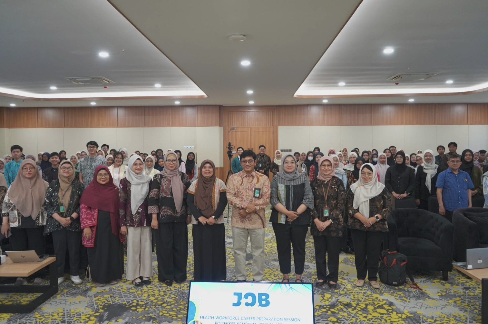

PMI Kesehatan
Peluang kerja luar negeri melalui skema pemerintah maupun mitra penempatan terverifikasi.
Lihat peluang →Satu pintu informasi bagi tenaga medis dan tenaga kesehatan Indonesia untuk mengenali peluang global, mengikuti program penyiapan, dan memantau perjalanan mobilitas secara terarah.
Setiap jalur mempunyai persyaratan, program penyiapan, mitra, dan mekanisme keberangkatan yang berbeda.
Peluang kerja luar negeri melalui skema pemerintah maupun mitra penempatan terverifikasi.
Lihat peluang →Pengalaman praktik dan pengenalan sistem pelayanan kesehatan di negara tujuan.
Lihat peluang →Pelatihan bahasa, budaya, etik praktik, uji kompetensi, dan pembelajaran berkelanjutan.
Lihat program →Pilih negara untuk melihat program, peluang, dan modul pembekalan yang tersedia.
Katalog ini memperlihatkan rancangan cara informasi dari KP2MI, Poltekkes, dan mitra dapat dipublikasikan dalam satu portal.
Pelatihan bahasa, budaya kerja, dan kompetensi perawatan lanjut usia sebagai persiapan seleksi.
Program intensif bahasa dan komunikasi klinis untuk mempersiapkan kandidat perawat menuju Jerman.
Pengenalan sistem pelayanan kesehatan, budaya kerja, dan praktik perawatan lansia bagi mahasiswa terpilih.
Modul dasar mengenai etik praktik, keselamatan pasien, adaptasi budaya, dan sistem kesehatan tujuan.
Simulasi ujian, pemetaan gap kompetensi, dan rekomendasi pembelajaran sebelum proses seleksi.
Program dapat berasal dari Kemenkes, KP2MI, 38 Poltekkes, LPK/P3MI, institusi pendidikan, fasilitas kesehatan, dan mitra global.

Pemetaan profesi, negara tujuan, jalur program, kesiapan dokumen, dan kompetensi awal.
Kelas bahasa negara tujuan, terminologi kesehatan, dan komunikasi dengan pasien.
Pembekalan adaptasi budaya kerja, etik praktik, regulasi, serta keselamatan pasien.
Try-out, persiapan wawancara, validasi kompetensi, kesehatan, dan persyaratan program.
Checklist akhir kontrak, visa, asuransi, kontak darurat, dan persetujuan keberangkatan.
Profil global menjadi penghubung informasi kesiapan, penempatan, monitoring, re-entry, serta rekognisi pengalaman.
Registrasi profil, pencarian peluang, pelatihan, seleksi, dan pemenuhan checklist pra-keberangkatan.
Data penempatan tersinkronisasi, check-in berkala, dukungan kompetensi, dan pelindungan di luar negeri.
Konfirmasi kepulangan, pemutakhiran pengalaman, pengumpulan portofolio, dan usulan rekognisi SKP.
Setiap institusi dapat berkontribusi sesuai perannya, sementara Kemenkes menjaga kualitas informasi dan konsistensi perjalanan data SDMK.
Buat profil minat untuk mendapatkan gambaran jalur, program penyiapan, dan peluang yang sesuai.